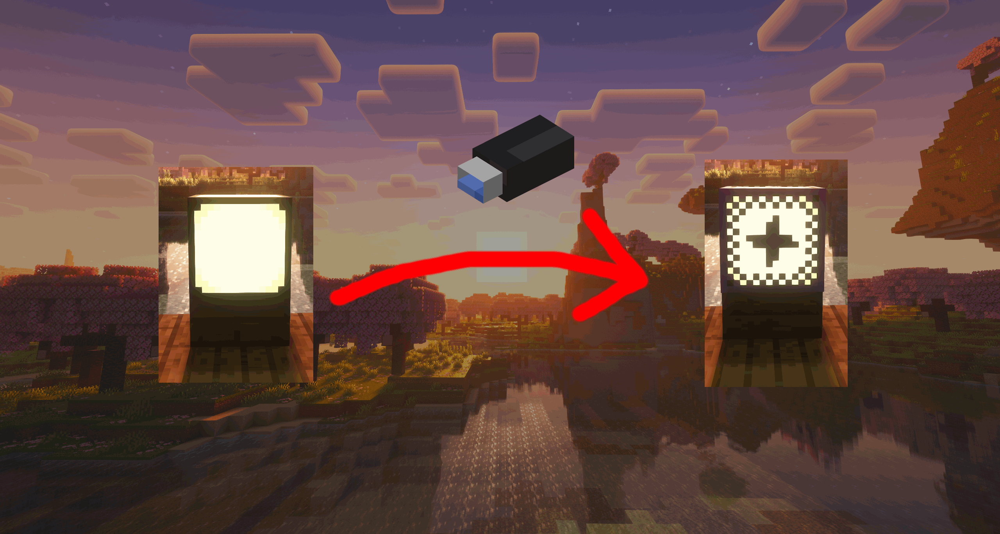
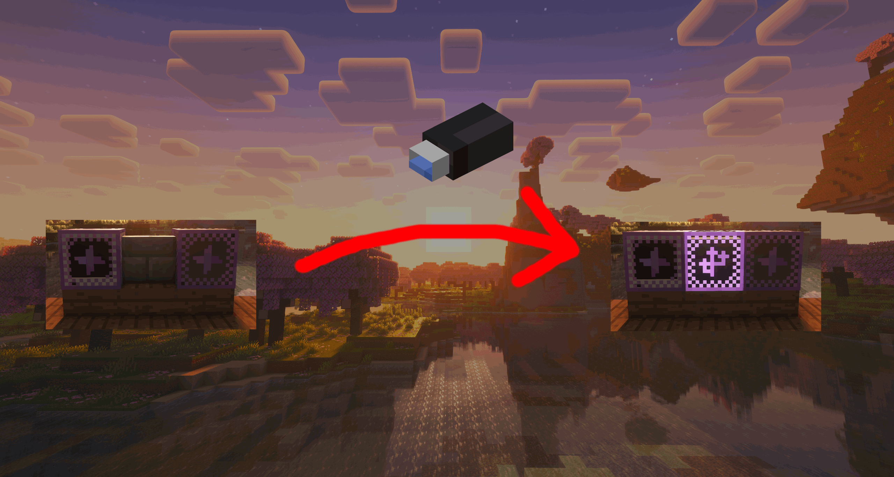
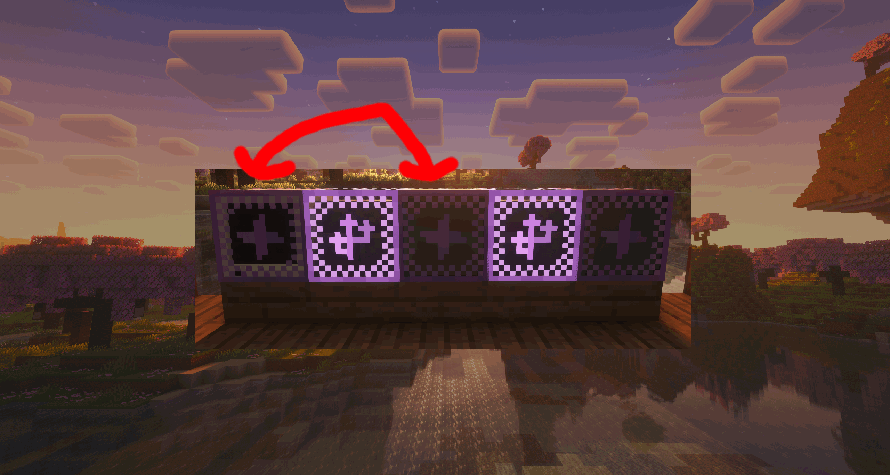
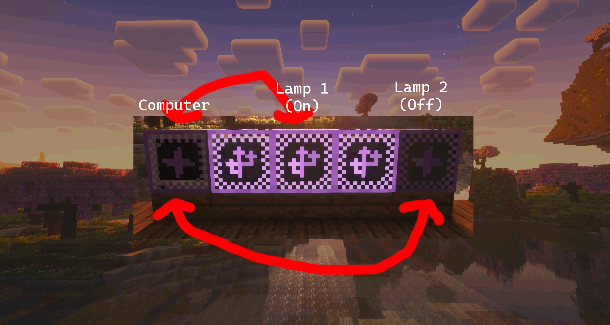
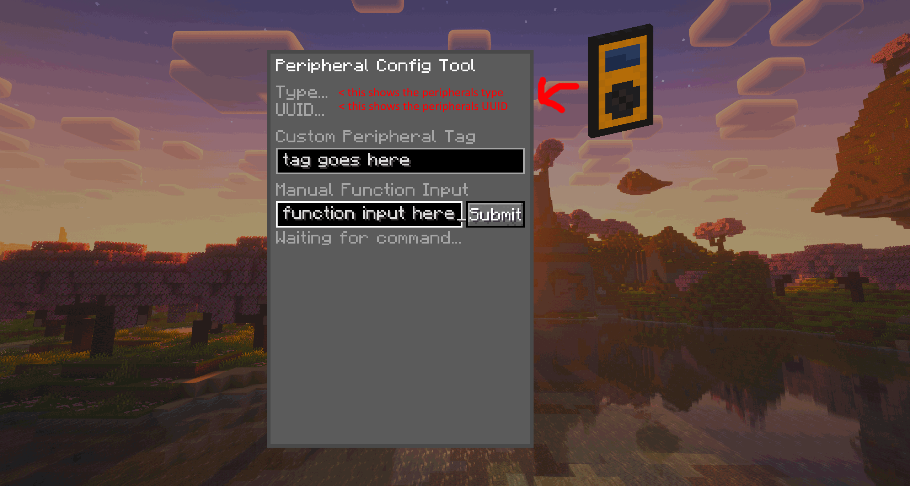

Peripheral Tutorial
What Are Peripherals?
Peripherals, or devices attached to a computer, are implemented in NEET computers to allow and enhance computer integration with the world around them. They also provide handy and helpful tools for the player to use. Peripherals, as a system, consist of peripheral devices, computers, and cables. Computers interact with and utilize peripherals with cables. Cables also determine which computers can access certain peripherals. This tutorial will explain how you can connect and configure peripherals and cables. This tutorial will introduce basic concepts, but excludes programming instructions,refer to the IO API to see how you can program NEET computers.
Basics
The first step to understanding peripheral management is to understand the most important tool, the peripheral cable item!
When holding the cable tool, you may notice that some blocks are marked with a purple plus icon (effect pictured below).

This visual overlay is how you will see peripheral infrastructure. The peripheral tool allows you to view and create connections to peripherals. Clicking any block with the tool will create a new overlay on the block, this overlay represents a cable.

*There is a noticable difference in brightness pictured in the image above, this is an error with the shader used in these images.
Connecting devices
Now that you can see and place cables, you are now able to connect computers and peripherals together. To connect devices together, place cables between them.

Note how the leftmost computer can access the light in the center, but not the light on the right. This is because the connection can not travel through devices, only cables, so the lamp on the right is currently unreachable.
If you want to make a connection from the computer to both lamps, you can do so by placing cable over the device (Lamp 1). The original connection will retain, and another connection will reach the next device (Lamp 2).

Advanced Configuration
You now know how to wire peripherals, but you can still do more configuration with them.
It's time to introduce the Peripheral Config Tool. The Peripheral Config Tool, like the Cable Tool, will allow you to see peripheral infrastructure. It provides functionality the Cable Tool does not, as shown when you click on a peripheral with it!

UUID, custom tag, and manual function input">
UUIDs
All peripherals have a Type, a piece of text identifying what type of device the peripheral is and what mod added it. Peripherals and computers also possess a UUID, a long string of numbers and letters that identifies specific peripherals, and also makes them unique.
Tags
Hovering over the Type or UUID fields on the menu will display the relevant property, however the Tag is set with the topmost text input, Tags are text that can be given to peripherals to identify them without using their UUID. Tags, UUIDs, and Types are all programmatically accessible to computers, and it's wise to utilize them when making programs for the mod!
Manual Functions
The final element of the menu is the Manual Function Input and the Submit button next to it, When setting up peripherals you may want to adjust it without allocating an entire computer and script in order to do so. The Manual Function Input can execute a function the peripheral. For example, "setLuminance(7)" or "setLuminance 7", although the manual input can only process String, Number, and Boolean parameters.And with that final feature explained, you now know everything to know about peripherals (if you read the API documentation aswell), now set forth and make something!